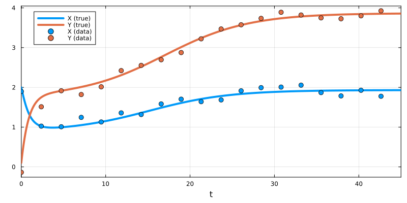
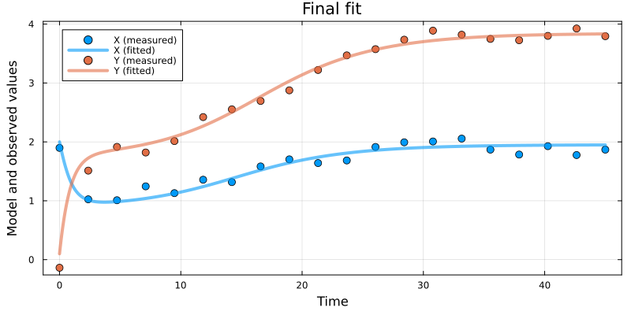
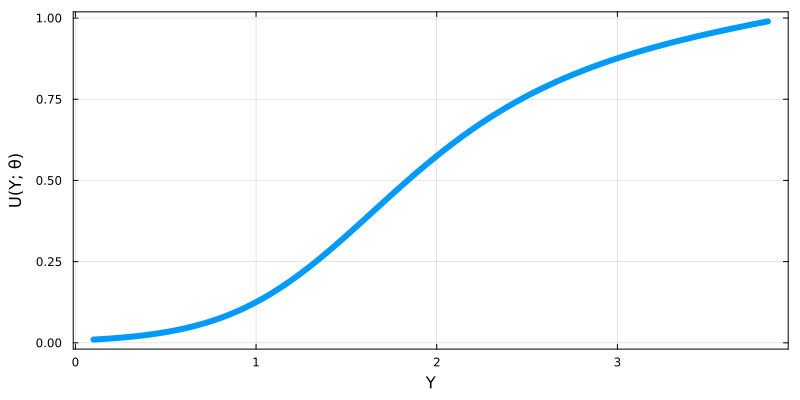
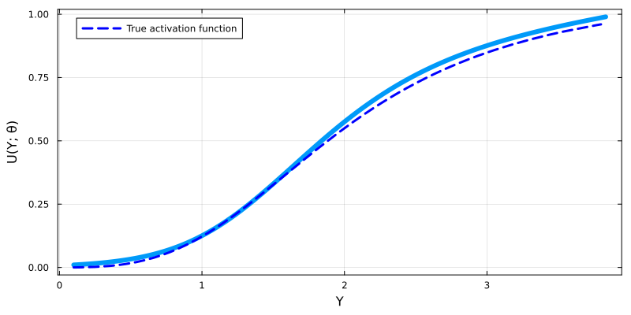
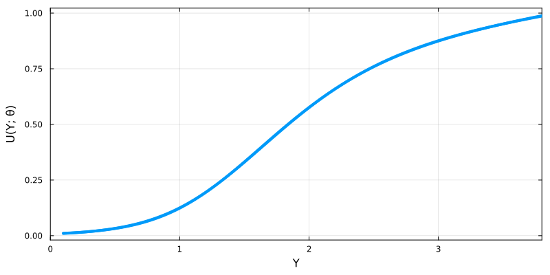

Fitting universal differential equations
Environment setup and package installation
The following code sets up an environment for running the code on this page.
using Pkg
Pkg.activate(; temp = true) # Creates a temporary environment, which is deleted when the Julia session ends.
Pkg.add("Catalyst")
Pkg.add("DataFrames")
Pkg.add("Distributions")
Pkg.add("Lux")
Pkg.add("ModelingToolkitNeuralNets")
Pkg.add("OrdinaryDiffEq")
Pkg.add("Optimisers")
Pkg.add("PEtab")
Pkg.add("Plots")Quick-start example
The following code provides a brief example of how to declare a UDE using Catalyst, ModelingToolkitNeuralNets.jl, and Lux.jl, and then fit it using PEtab.jl.
# Declare the model (a mutual activation loop).
using Catalyst
rn = @reaction_network begin
hill(Y, v, K, n), 0 --> X
X, 0 --> Y
d, (X, Y) --> 0
end
# Generate synthetic data to which we will apply the fitting procedure.
using Distributions, OrdinaryDiffEq, Plots
u0 = [:X => 2.0, :Y => 0.1]
ps_true = [:v => 1.1, :K => 2.0, :n => 3.0, :d => 0.5]
tend = 45.0
oprob_true = ODEProblem(rn, u0, tend, ps_true)
sol_true = solve(oprob_true)
sample_t = range(0.0, tend; length = 20)
σ = 0.1
sample_X = [rand(Normal(X, σ)) for X in sol_true(sample_t; idxs = :X)]
sample_Y = [rand(Normal(Y, σ)) for Y in sol_true(sample_t; idxs = :Y)]
plot(sol_true; lw = 6, label = ["X (true)" "Y (true)"])
plot!(sample_t, sample_X, seriestype = :scatter, label = "X (data)", color = 1, ms = 6)
plot!(sample_t, sample_Y, seriestype = :scatter, label = "Y (data)", color = 2, ms = 6)
# Create a UDE using Lux and ModelingToolkitNeuralNets.
using ModelingToolkitNeuralNets, Lux
nn_arch = Lux.Chain(
Lux.Dense(1 => 3, Lux.softplus, use_bias = false),
Lux.Dense(3 => 3, Lux.softplus, use_bias = false),
Lux.Dense(3 => 1, Lux.softplus, use_bias = false),
)
@SymbolicNeuralNetwork U, θ = nn_arch
A(z) = U(z, θ)[1]
rn_ude = @reaction_network begin
$A(Y), 0 --> X
X, 0 --> Y
d, (X, Y) --> 0
end
# Bundle the UDE and data into a PEtab problem.
using DataFrames, PEtab
ps_est = [PEtabMLParameter(:θ), PEtabParameter(:d)]
observables = [PEtabObservable(:obs_X, :X, σ), PEtabObservable(:obs_Y, :Y, σ)]
dfX = DataFrame(obs_id = "obs_X", time = sample_t, measurement = sample_X)
dfY = DataFrame(obs_id = "obs_Y", time = sample_t, measurement = sample_Y)
measurements = vcat(dfX, dfY)
petab_model = PEtabModel(rn_ude, observables, measurements, ps_est; speciemap = u0)
petab_prob = PEtabODEProblem(petab_model)
# Fit the unknown function and parameters using 5 independent starts of 10,000 Adam iterations.
using Optimisers
options = OptimisersOptions(iterations = 10000)
@time res = calibrate_multistart(petab_prob, Optimisers.Adam(1e-3), 5; options)
# Plot the fitted simulation and the recovered activation functions.
plot(res, petab_prob)
plot(res, petab_prob; plot_type = :best_function)
In this tutorial, we describe how to create and fit universal differential equation (UDE) models declared through Catalyst. UDEs are a hybrid modelling framework: they combine mechanistic modelling (where models are built from first principles) with data-driven modelling (where models are learnt from data)[1]. The core idea is to declare known model components as standard differential equations, while allowing unknown system dynamics to be learnt from data. In practice, this is done by inserting universal function approximators (typically neural networks) into differential equations to represent unknown dynamics.
In the context of Catalyst and chemical reaction networks, UDEs can naturally be used to learn reaction rates. Non-constant reaction rates are typically modelled by heuristically chosen functions, and in some cases a more natural choice is to learn these rate functions directly from data[2]. This can be used to, for example, learn a protein's production rate as a function of a transcription factor's concentration.
In this tutorial, we use Lux.jl to declare neural networks, ModelingToolkitNeuralNets.jl to incorporate them into Catalyst models, and PEtab.jl to fit these models to data. More details on these packages can be found in their respective documentation, while we here will describe how they compose with each other and Catalyst.
Fitting a rate-based UDE
For this example, we will use a mutual activation loop in which two species ($X$ and $Y$) activate each other's production.
using Catalyst
rn_true = @reaction_network begin
hill(Y, v, K, n), 0 --> X
X, 0 --> Y
d, (X, Y) --> 0
end\[ \begin{align*} \varnothing &\xrightarrow{\frac{Y^{n} v}{K^{n} + Y^{n}}} \mathrm{X} \\ \varnothing &\xrightarrow{X} \mathrm{Y} \\ \mathrm{X} &\xrightarrow{d} \varnothing \\ \mathrm{Y} &\xrightarrow{d} \varnothing \end{align*} \]
Here, the production of $X$ follows a Hill function, which we will later try to recover through a UDE.
First, we designate the true simulation conditions, from which we will generate a synthetic dataset for the fitting procedure.
using Distributions, OrdinaryDiffEq, Plots
# Simulate the model at the true conditions.
u0 = [:X => 2.0, :Y => 0.1]
ps_true = [:v => 1.1, :K => 2.0, :n => 3.0, :d => 0.5]
tend = 45.0
oprob_true = ODEProblem(rn_true, u0, (0.0, tend), ps_true)
sol_true = solve(oprob_true)
# Generate normally distributed noisy measurements with a fixed standard deviation.
t_measurement = range(0.0, tend; length = 20)
σ = 0.1
X_observed = [rand(Normal(X, σ)) for X in sol_true(t_measurement; idxs = :X)]
Y_observed = [rand(Normal(Y, σ)) for Y in sol_true(t_measurement; idxs = :Y)]
# Plots the true simulation and the synthetic data.
plot(sol_true; lw = 4, label = ["X (true)" "Y (true)"])
plot!(t_measurement, X_observed; seriestype = :scatter, label = "X (data)", color = 1, ms = 5)
plot!(t_measurement, Y_observed; seriestype = :scatter, label = "Y (data)", color = 2, ms = 5)
Next, we declare a UDE version of the model by replacing the Hill function with a neural network. The neural network will be created using Lux. Here, a relatively small feed-forward architecture is sufficient. By using a non-negative activation function in the final layer (here, softplus), we constrain the fitted function to be non-negative, which is a known physical constraint for reaction rate functions. Softplus is also smooth, a desirable property for functions embedded in ODE simulations. A full list of available activation functions can be found here.
using Lux
nn_arch = Lux.Chain(
Lux.Dense(1 => 3, Lux.softplus, use_bias = false),
Lux.Dense(3 => 3, Lux.softplus, use_bias = false),
Lux.Dense(3 => 1, Lux.softplus, use_bias = false)
)Chain(
layer_1 = Dense(1 => 3, softplus, use_bias=false), # 3 parameters
layer_2 = Dense(3 => 3, softplus, use_bias=false), # 9 parameters
layer_3 = Dense(3 => 1, softplus, use_bias=false), # 3 parameters
) # Total: 15 parameters,
# plus 0 states.We now generate a SymbolicNeuralNetwork using ModelingToolkitNeuralNets. This embeds the Lux model in a symbolic format that is compatible with Catalyst (and ModelingToolkit).
using ModelingToolkitNeuralNets
@SymbolicNeuralNetwork U, θ = nn_arch(U⋆, θ[1:15])Here, U represents the neural network structure, and θ represents its parameters. Additional options for using the @SymbolicNeuralNetwork macro are described here and here. Next, using the following syntax, we can interpolate this function approximator as a Catalyst model rate.
A(z) = U(z, θ)[1]
rn_ude = @reaction_network begin
$A(Y), 0 --> X
X, 0 --> Y
d, (X, Y) --> 0
end\[ \begin{align*} \varnothing &\xrightarrow{U_{{1}}\left( Y, \theta \right)} \mathrm{X} \\ \varnothing &\xrightarrow{X} \mathrm{Y} \\ \mathrm{X} &\xrightarrow{d} \varnothing \\ \mathrm{Y} &\xrightarrow{d} \varnothing \end{align*} \]
We can inspect the parameters contained within this model:
parameters(rn_ude)3-element Vector{SymbolicUtils.BasicSymbolicImpl.var"typeof(BasicSymbolicImpl)"{SymReal}}:
d
U
θIn addition to the mechanistic parameter $d$, the neural network parameters $θ$ have also been incorporated into the model. The neural network architecture, $U$, is also represented as a parameter, but in practice this parameter is fixed and can be ignored.
Now, we use PEtab to simultaneously fit $d$ and $θ$. The workflow is almost identical to the standard PEtab parameter fitting workflow. The main differences are that we declare $θ$ as a PEtabMLParameter (rather than a PEtabParameter), and that we choose an optimisation algorithm better suited to neural network training. We begin by declaring the parameters we wish to fit, the observables (and their noise formulas), and the measurements, and then use these to generate a PEtabODEProblem.
using DataFrames, PEtab
ps_est = [PEtabMLParameter(:θ), PEtabParameter(:d)]
observables = [PEtabObservable(:obs_X, :X, σ), PEtabObservable(:obs_Y, :Y, σ)]
dfX = DataFrame(obs_id = "obs_X", time = t_measurement, measurement = X_observed)
dfY = DataFrame(obs_id = "obs_Y", time = t_measurement, measurement = Y_observed)
measurements = vcat(dfX, dfY)
petab_model = PEtabModel(rn_ude, observables, measurements, ps_est; speciemap = u0)
petab_prob = PEtabODEProblem(petab_model)PEtab supports many options for customising the optimisation problem. Here, we choose the simplest settings. These options are described further in the Catalyst-specific PEtab tutorial, and in PEtab's documentation.
The UDE model can now be fitted to the data. Here, we use the Adam implementation from the Optimisers.jl package, running 5 independent starts with 10,000 iterations/epochs each.
using Optimisers
options = OptimisersOptions(iterations = 10000)
@time res = calibrate_multistart(petab_prob, Optimisers.Adam(1e-3), 5; options)1162.852458 seconds (1.97 G allocations: 165.732 GiB, 3.56% gc time, 6.13% compilation time: 1% of which was recompilation)PEtab's plot recipes can be applied to fitted UDE models without adaptation. Here, we plot the fitted UDE together with the data.
plot(res, petab_prob; lw = 4, la = 0.6, ms = 5, title = "Final fit")
In the next section, we will show different UDE-specific plotting options.
Investigating fitted neural networks
In many cases, UDEs are used to fit unknown model functions. When a fitted function has a single input argument, the final fit can often be interpreted by directly plotting that function. With PEtab, this can be done using
plot(res, petab_prob; plot_type = :best_function, lw = 6)
Since we use synthetic data, we can also compare the fitted function to the ground-truth function:
true_f(Y) = Catalyst.hill(Y, 1.1, 2.0, 3.0)
plot!(true_f, 0.1, 3.8, linestyle = :dash, lw = 3, color = :blue, label = "True activation function")
This lets us check whether the correct function has been correctly recovered.
When carrying out multistart calibration, PEtab also provides the plot_type = :function_ensemble option, which plots the functional forms found by each optimisation run. In practice, some runs might not have converged. Here, we use the loss_thres option to only plot functions associated with optimisation runs with a similar loss value to the best run:
plot(res, petab_prob; plot_type = :function_ensemble, lw = 4, xlimit = (0.0, 3.8), loss_thres = res.fmin + 2.0)
Here, we can see that all optimisation runs achieving a good model-to-data fit converge to the same functional form. In practice, this can be used as a simple form of identifiability analysis, assessing the extent to which a single functional form can reliably be recovered from the data[2].
A more thorough description of these plots and their options can be found here. To retrieve the fitted function, for example to evaluate it manually at selected values, use:
fitted_oprob = get_odeproblem(res, petab_prob)[1]
fitted_f(z) = fitted_oprob.ps[U](z, fitted_oprob.ps[θ])[1]
fitted_f(1.0)0.12532941180539398Neural networks with multiple inputs or outputs
It is possible to use neural networks with multiple inputs. To do this, simply list all inputs in the symbolic neural network function's arguments, while also ensuring that the declared Lux chain have the correct number of inputs in the first layer. Here we use this approach to declare a feedforward loop where the production rate of $Z$ is an unknown function of both $X$ and $Y$.
using Catalyst, ModelingToolkitNeuralNets, Lux
nn_arch = Lux.Chain(
Lux.Dense(2 => 3, Lux.softplus, use_bias = false),
Lux.Dense(3 => 3, Lux.softplus, use_bias = false),
Lux.Dense(3 => 1, Lux.softplus, use_bias = false),
)
@SymbolicNeuralNetwork U, θ = nn_arch
f(x, y) = U(x, y, θ)[1]
multi_input_ude = @reaction_network begin
d, (X, Y, Z) --> 0
hill(X,v,K,n), 0 --> Y
$f(X, Y), 0 --> Z
end\[ \begin{align*} \mathrm{X} &\xrightarrow{d} \varnothing \\ \mathrm{Y} &\xrightarrow{d} \varnothing \\ \mathrm{Z} &\xrightarrow{d} \varnothing \\ \varnothing &\xrightarrow{\frac{X^{n} v}{K^{n} + X^{n}}} \mathrm{Y} \\ \varnothing &\xrightarrow{U_{{1}}\left( X, Y, \theta \right)} \mathrm{Z} \end{align*} \]
It is also possible to declare neural networks with multiple output. Generally, this is equivalent to fitting two unknown functions, however, if the two fitted functions are expected to have similar forms, declaring them as a single neural network with multiple outputs can be numerically advantageous. Below, we use this approach to declare a model where a single species $X$ activates the production of two different species ($Y$ and $Z$) according to two different unknown functions that are approximated using a single, two-output, neural network.
nn_arch = Lux.Chain(
Lux.Dense(1 => 3, Lux.softplus, use_bias = false),
Lux.Dense(3 => 3, Lux.softplus, use_bias = false),
Lux.Dense(3 => 2, Lux.softplus, use_bias = false),
)
@SymbolicNeuralNetwork U, θ = nn_arch
f1(x) = U(x, θ)[1]
f2(x) = U(x, θ)[2]
rn_ude = @reaction_network begin
d, (X, Y, Z) --> 0
$f1(X), 0 --> Y
$f2(X), 0 --> Z
end\[ \begin{align*} \mathrm{X} &\xrightarrow{d} \varnothing \\ \mathrm{Y} &\xrightarrow{d} \varnothing \\ \mathrm{Z} &\xrightarrow{d} \varnothing \\ \varnothing &\xrightarrow{U_{{1}}\left( X, \theta \right)} \mathrm{Y} \\ \varnothing &\xrightarrow{U_{{2}}\left( X, \theta \right)} \mathrm{Z} \end{align*} \]
Alternative approaches for incorporating neural networks into models
Finally, we consider some additional contexts in which neural networks can be incorporated into Catalyst models.
Declaring UDEs programmatically
While this tutorial has primarily created UDEs using the Catalyst @reaction_network DSL, it is also possible to create them programmatically. Below, we create a UDE representation of the same mutual activation loop as previously, but using the programmatic interface.
using Catalyst, ModelingToolkitNeuralNets, Lux
t = default_t()
@species X(t) Y(t)
@parameters d
nn_arch = Lux.Chain(
Lux.Dense(1 => 3, Lux.softplus, use_bias = false),
Lux.Dense(3 => 3, Lux.softplus, use_bias = false),
Lux.Dense(3 => 1, Lux.softplus, use_bias = false),
)
@SymbolicNeuralNetwork U, θ = nn_arch
rxs = [
Reaction(U(Y, θ)[1], [], [X]),
Reaction(X, [], [Y]),
Reaction(d, [X], []),
Reaction(d, [Y], []),
]
@named rs = ReactionSystem(rxs, t)
rs = complete(rs)\[ \begin{align*} \varnothing &\xrightarrow{U_{{1}}\left( Y, \theta \right)} \mathrm{X} \\ \varnothing &\xrightarrow{X} \mathrm{Y} \\ \mathrm{X} &\xrightarrow{d} \varnothing \\ \mathrm{Y} &\xrightarrow{d} \varnothing \end{align*} \]
ModelingToolkitNeuralNets also provides a function version of the @SymbolicNeuralNetwork macro, which provides some additional functionality. It can be found here.
Non-rate based UDEs
Above, we described how a neural network can be used to learn an unknown rate function. However, symbolic neural networks created using @SymbolicNeuralNetwork are highly flexible: they act as normal functions and can be used wherever such functions can be used. For example, neural networks can be inserted into coupled equations. Here, we use this to model a cell growing in a nutrient ($N$). The rate at which the nutrient is consumed is modelled as an unknown function of both a nutrient-activated protein's active form ($Xₐ$) and the nutrient's concentration. Note that the unknown function has two input variables, which is straightforward to handle.
# Create a symbolic neural network depending on two input variables.
using ModelingToolkitNeuralNets, Lux
nn_arch = Lux.Chain(
Lux.Dense(2 => 3, Lux.softplus, use_bias = false),
Lux.Dense(3 => 3, Lux.softplus, use_bias = false),
Lux.Dense(3 => 1, Lux.softplus, use_bias = false),
)
@SymbolicNeuralNetwork U, θ = nn_arch
C(z1, z2) = U(z1, z2, θ)[1]
# Create a model of a cell that consumes a limited nutrient supply.
using Catalyst
rs = @reaction_network begin
@equations D(N) ~ -$C(N, Xₐ)
(kₐ*N, kᵢ), Xᵢ <--> Xₐ
end\[ \begin{align*} \mathrm{X_i} &\xrightleftharpoons[k_i]{N k_a} \mathrm{X_a} \\ \frac{\mathrm{d} N}{\mathrm{d}t} &= - U_{{1}}\left( N, X_a, \theta \right) \end{align*} \]
Non-ODE UDEs
Up until now, we have assumed that all fitted universal differential equations are based on ODEs. However, in practice, UDEs declared through Catalyst act as normal differential equations (although with an unusually large number of parameters). This means that JumpProblems and SDEProblems can be generated from Catalyst UDEs using the standard syntax, for example:
# Create the UDE.
using Catalyst, ModelingToolkitNeuralNets, Lux
nn_arch = Lux.Chain(
Lux.Dense(1 => 3, Lux.softplus, use_bias = false),
Lux.Dense(3 => 3, Lux.softplus, use_bias = false),
Lux.Dense(3 => 1, Lux.softplus, use_bias = false)
)
@SymbolicNeuralNetwork U, θ = nn_arch
A(z) = U(z, θ)[1]
rn_ude = @reaction_network begin
$A(Y), 0 --> X
X, 0 --> Y
d, (X, Y) --> 0
end
# Create an SDEProblem.
u0 = [:X => 2.0, :Y => 0.1]
ps = [:d => 0.5]
sprob = SDEProblem(rn_ude, u0, 45.0, ps)generates a universal stochastic differential equation.
The parameters of this model cannot currently be fitted using PEtab. However, one can use an approach similar to those used here and here to declare a loss function comparing the behaviour of this UDE with available data. Next, the parameters can be fitted by minimising that loss function. An example of how this is done for an ODE-declared UDE can be found here.
Learning parameters or observables using neural networks
Throughout this tutorial, we have shown how neural networks can be incorporated into Catalyst models to learn unknown functions of system variables within the main model system. PEtab.jl, however, also supports two additional ways to incorporate neural networks that, due to how they are inserted, can be handled more efficiently:
- Models where the neural network exists within the mapping between the model's states and its observables.
- Models where parameters are neural-network mappings of other parameter values. Primarily, this can be used to learn phenotypical parameters (such as binding rates) from measurable parameters (such as protein structure data).
To learn more about how to declare such models, please see the following two PEtab tutorials: observable neural networks and pre-simulation neural networks.
Citations
If you use this functionality in your research, in addition to Catalyst, please cite the following papers to support the authors of the Lux.jl and PEtab.jl packages:
@software{pal2025lux,
author = {Pal, Avik},
title = {{Lux: Explicit Parameterization of Deep Neural Networks in Julia}},
publisher = {Zenodo},
year = {2025},
doi = {10.5281/zenodo.7808903},
url = {https://doi.org/10.5281/zenodo.7808903}
}@article{PEtabBioinformatics2025,
title={PEtab.jl: advancing the efficiency and utility of dynamic modelling},
author={Persson, Sebastian and Fr{\"o}hlich, Fabian and Grein, Stephan and Loman, Torkel and Ognissanti, Damiano and Hasselgren, Viktor and Hasenauer, Jan and Cvijovic, Marija},
journal={Bioinformatics},
volume={41},
number={9},
pages={btaf497},
year={2025},
publisher={Oxford University Press}
}